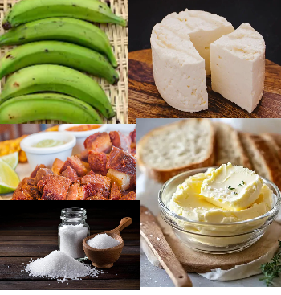
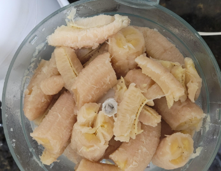
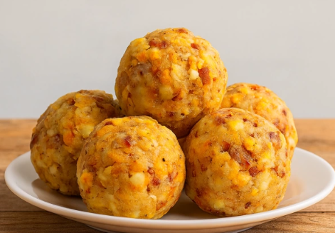

Fotos de la receta



Video de la receta
Ingredientes
| Ingrediente | Cantidad | Unidad |
|---|---|---|
| Cargando total de ingredientes... | ||
Instrucciones de preparacion
- Pela los platanos verdes y cortalos en trozos medianos.
- Cocina los trozos en agua con un poco de sal hasta que esten suaves, unos 20 minutos.
- Escurre el platano y aplastalo en caliente hasta formar una masa uniforme.
- Mezcla la masa con el queso fresco desmenuzado y el chicharron o tocino picado.
- Con las manos ligeramente engrasadas, forma bolas medianas con la mezcla.
- Derrite la mantequilla en un sarten a fuego medio y dora las bolas por todos los lados.
- Sirve caliente, solo o acompañado de cafe o chocolate caliente.